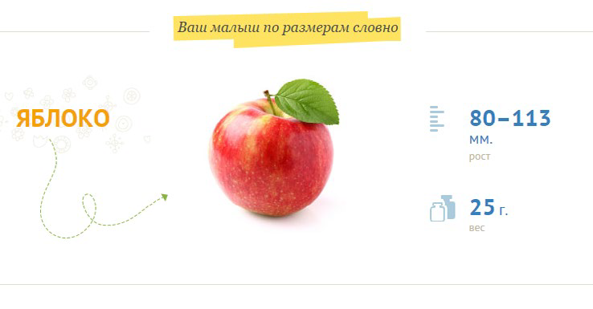
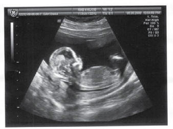

14 неделя беременности

14 неделя беременности – один самых благоприятных этапов этого большого пути. Самочувствие хорошее, о вашей тайне многие ещё не догадываются, и малыш уже требует общения с вами. Он слышит голос мамы, ощущает её настроение – пора начать разговаривать с крохой.
В это время плод очень быстро растёт, стремительно набирает вес. Если можно было бы посмотреть на малыша, вы увидели б, как он похож на новорожденного. Правда, пока он очень худенький, но копить жировую ткань ещё нет нужды: сейчас во главе угла стоит развитие и совершенствование органов и систем.
Лицо малыша продолжает оформляться: расстояние между глазами постепенно уменьшается, хотя они до сих пор затянуты веками, начинают вырисовываться ушки, щечки и переносица.
К концу недели детские ручонки станут пропорциональными всему телу, но ножкам для этого еще предстоит расти. С 14 недели печень ребенка начинает самостоятельно вырабатывать желчь, а выработку красных кровяных телец (эритроцитов) будет осуществлять селезенка крохи.
Малыш сейчас сгибает и разгибает все крошечные суставы своего тела и непрестанно двигается внутри матки. По всей поверхности тела ребенка растет лануго – зародышевый пушок.
Кожа ребенка сейчас прозрачна, и через нее хорошо видны все крошечные кровеносные сосуды.
Еще одной особенностью, имеющей место на 14 неделе беременности, являются дыхательные движения, выполняемые малышом, частота которых составляет 40-70 в минуту.
УЗИ на 13 неделе беременности
ВАШ ОРГАНИЗМ
Очень часто 14 неделю беременности называют началом «золотого периода беременности» (который длится до 26 недели), поскольку к этому времени организм мамочки уже адаптировался к произошедшим изменениям, а малыш активно двигается, растет и развивается.
Вы заметите, что между пупком и лобком у вас растет животик. Поэтому, одежда свободного покроя становится первым другом мамочки до самых родов. Очень вероятно, что эмоциональный настрой у вас несколько выровнялся, и вы сейчас чувствуете себя беременной в меньшей степени, чем в предыдущие месяцы. Это совершенно нормально, особенно теперь, когда утренняя тошнота и усталость отступили (если это так).
Результатом гормональных изменений на этом этапе могут стать запоры. Вы можете заметить некоторую прибавку в весе, и, при условии, что вы питаетесь здоровой пищей, это обусловлено той нормальной прибавкой в весе, которая должна наблюдаться во время беременности. Вы также можете обратить внимание, что вены на вашей груди становятся более заметными. Диаметр околососкового кружка у вас также увеличивается. Все изменения вашей груди связаны с приготовлением организма к кормлению грудью.
Могут начаться изменения кожных покровов беременной женщины, а именно образование или изменение папиллом и родимых пятен. Папилломы (мягкие бородавки) могут измениться в размерах (если уже имелись до беременности) или вырасти, а родимые пятна – потемнеть или изменить свой размер. Поэтому, в случае изменения имеющихся образований на коже, нужно показать их врачу для выявления причин, связанных с ними.
Иногда у беременных женщин появляются кондиломы – бородавки в области заднего прохода или влагалища, образование которых связано с вирусом папилломы. С данной проблемой также стоит обратиться к специалисту.
Кондиломы могут осложнить течение беременности, а также предстоящие роды, поскольку могут сильно разрастись, закупоривая родовой канал, что препятствует родам. Но самое неприятное здесь то, что при родах можно заразить новорожденного малыша этим вирусом. Кондиломы можно и нужно лечить, и для этого существуют различные методы: обычная и лазерная хирургия, прижигание, замораживание и обработка специальными лекарственными препаратами. Но если кондиломы были обнаружены еще до беременности, то лучше, конечно, не затягивать лечение и начать сразу же, поскольку некоторые методы лечения кондилом не желательны в период беременности, к тому же наличие кондилом искажает результаты соскоб-мазка.
Именно сейчас может проявиться довольно распространенное у беременных женщин заболевание – кандидоз (молочница).
ЗДОРОВЫЕ СОВЕТЫ
С началом 14 недели беременности начинают отступать такие проблемы, как токсическое воздействие лекарственных препаратов и инфекций на развивающийся плод. Теперь запрещенные ранее (в первом триместре) некоторые лекарства можно принимать, не опасаясь за жизнь малыша (но прежде необходимо проконсультироваться с врачом).
Из-за того, что активно развивается мышечная система малыша, он больше двигается, мамин организм потребует больше белка. Отварная говядина, фасоль – эти продукты должны быть на вашем столе. Точно так же не забывайте о клетчатке, поэтому овощи и фрукты кушайте усиленно.
Сладости и мучное лучше ограничить, ешьте их до обеда в небольших количествах. А вот «кушать за двоих» точно не надо: лишний вес на этом сроке точно ни к чему.
Возможно, именно на 14 неделе врач назначит приём витаминного комплекса. Сегодня без этого не обойтись: еда в полной мере не может обеспечить организм мамы всеми необходимыми витаминами.
Беременной женщине не стоит ограничивать себя в домашних хлопотах, тем более, если они доставляют ей истинное удовольствие, а также ущемлять себя в положительных эмоциях и движении. Можно посмотреть интересный добрый фильм, прогуляться с супругом по парку, прикупить что-нибудь для себя.
Также стоит вовлекать будущего отца в свои переживания, ощущения и даже интересы, чтобы он мог пообщаться с малышом.
Ведь благодаря этому после рождения ребенок быстрее узнает знакомые голоса и будет спокойным.
Походка уже начинает меняться, поэтому каблуки точно пора ставить на полку. Беременность – не повод отказаться от желания быть красивой, наоборот, ваше внутреннее свечение придаёт вам особый шарм. Поэтому красивая причёска, лёгкий макияж, удобная стильная одежда – и вы будете самой очаровательной беременной.
13 неделя 15 неделя